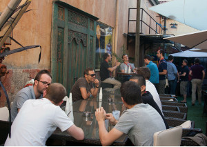
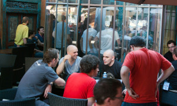

RuLu 2012 has been such a great conference, overpassing by far the highest expectations of its attendees, that we had to run a third edition!
So we’re delighted to announce today the official launch of the third edition of Ruby Lugdunum a.k.a RuLu 2013, taking place on June 20-21 in Lyon.
We will follow the already well-known recipe of RuLu, which had made it the greatest Ruby conference in the French provinces: best talks of the moment (in English), gorgeous venues, great atmosphere and nice food (Lyon is the French capital of gastronomy).

We will be about 200 attendees from Lyon, France, Europe and other countries, getting to know each other on these 2 days.
On Thursday June 20th during daylight hours, we will attend 8 speaker sessions at La Manufacture des Tabacs, one of the greatest university of Lyon. Lunch and coffee break will obviously be provided, and we’ll all enjoy a sunny day of inspiring conference with long networking breaks.


On Friday June 21st, the day after the conference, attendees will practice what they learnt during the conference. We will have a few workshops back at La Manu to go further with Ruby.

We brought together a new multi-disciplinary team of passionate organizers.
The three musketeers are:
Few amazing friends often help us. We’ll thank them later; we’re too busy organizing everything at the moment.

We’re still working on the speaker lineup (and you’re more than welcome to send us an email if you want to talk or if you think of someone you’d like to see).
We utilize Ruby every single day, so we know what are the most interesting current Ruby projects. Trust us for bringing the most amazing speakers to the second largest town in France.
Yet we can already announce that one of our workshop will be hold by Laurent Sansonneti (creator of RubyMotion). He’s a good friend, and we could not thank him enough for this.
Brace yourselves; we will release the Early Bird batch tickets at the beginning of May.

Finally, throwing the best conference you can think of is a lot of work. If you want to help, give feedback, send your love or send LOLcats video to us, just say hello at hi@rulu.eu